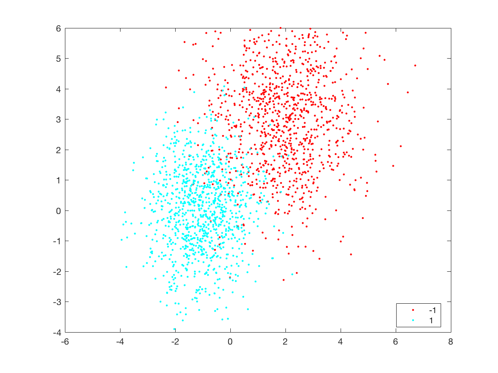
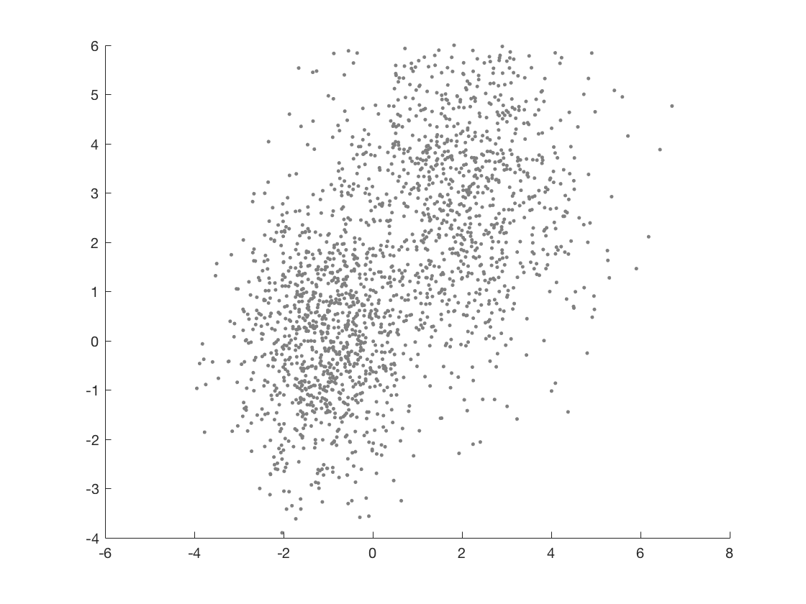
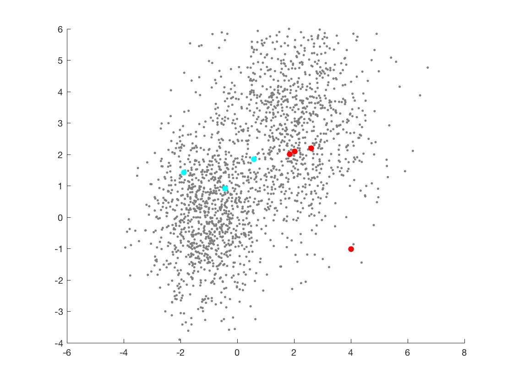
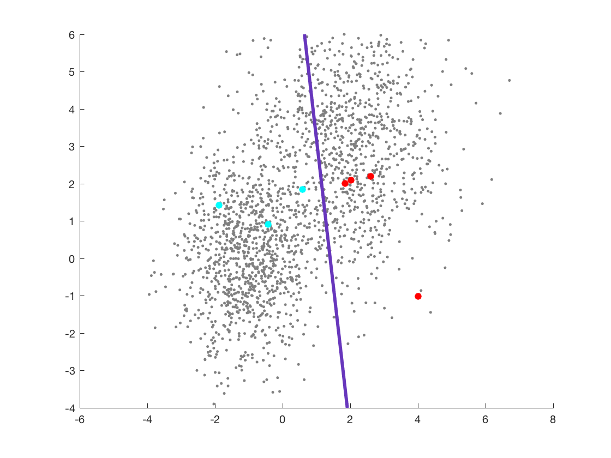
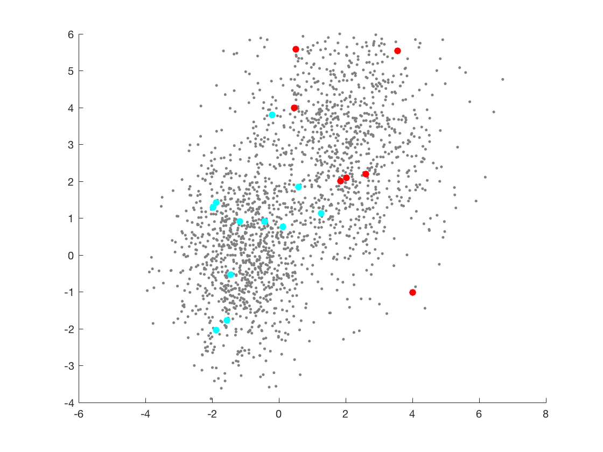
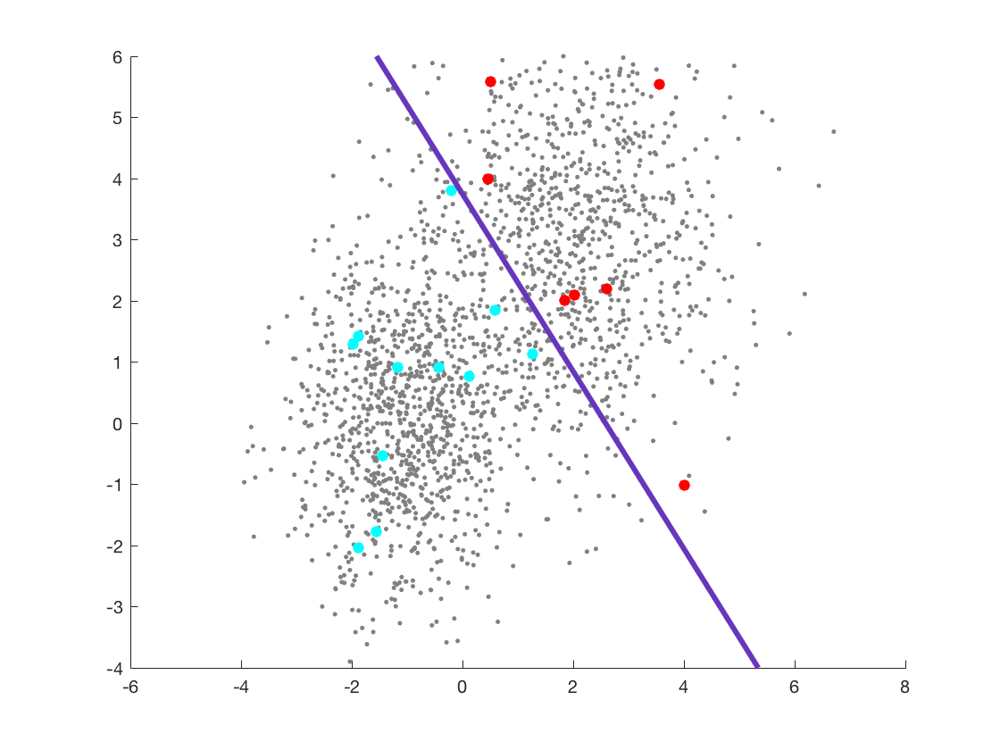
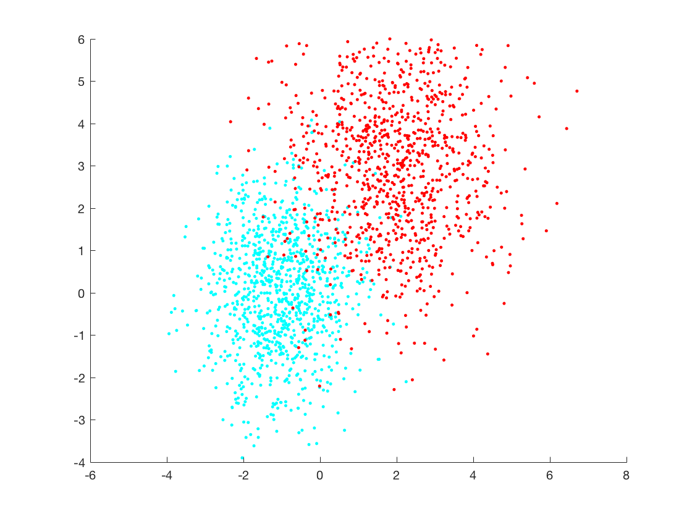
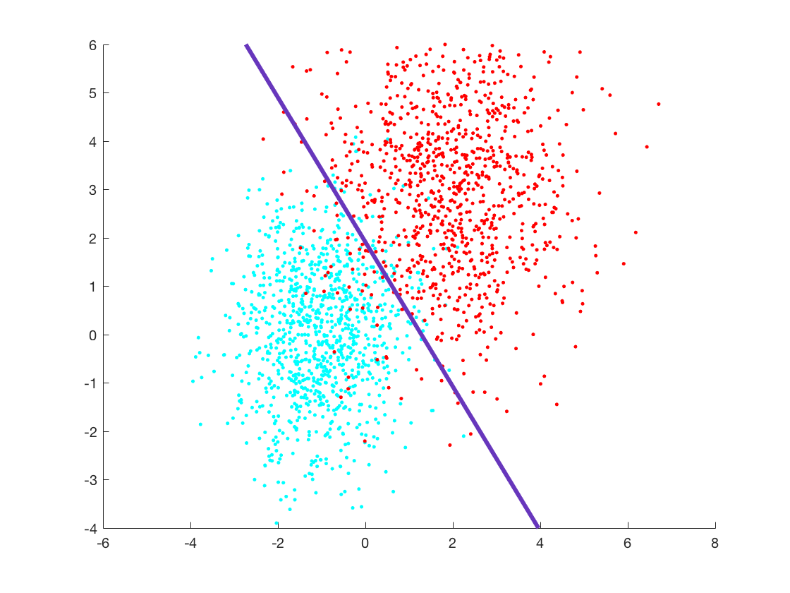

Contents
caca; % load data use_data = 2; if use_data == 1 load ../data/nonLinSep_data.mat load ../data/nonLinSep_label.mat X_data = X_nonLinSep; Y_data = Y_nonLinSep; else load ../data/nonLinSep_data2.mat load ../data/nonLinSep_label2.mat X_data = X_nonLinSep2; Y_data = Y_nonLinSep2; end
% Initialize gif figure(1) filename = 'activeLearn_test.gif';
Plot using gscatter to see groups
gscatter(X_data(:,1), X_data(:,2),Y_data,[],'.',[]) xlim([-6 8]); ylim([-4 6]); % drawnow % frame = getframe(1); % im = frame2im(frame); % [imind, cm] = rgb2ind(im, 256); % % imwrite(imind,cm,filename,'gif', 'Loopcount',inf);
Plot in gray using scatter to show that we don't know the labels
s = scatter(X_data(:,1), X_data(:,2),'.'); s.MarkerEdgeColor = [0.5 0.5 0.5]; s.MarkerFaceColor = [0.5,0.5,0.5]; xlim([-6 8]); ylim([-4 6]); % drawnow % frame = getframe(1); % im = frame2im(frame); % [imind, cm] = rgb2ind(im, 256); % imwrite(imind,cm,filename,'gif','WriteMode','append'); hold on;
Set up indexing
index = zeros(2000,1);
seed by taking random points to label
rng(2); seed = randperm(length(index)); index(seed(1:8)) = 1; X_seed = X_data(index==1,:); Y_seed = Y_data(index==1);
figure; s = scatter(X_data(:,1), X_data(:,2),'.'); s.MarkerEdgeColor = [0.5 0.5 0.5]; s.MarkerFaceColor = [0.5,0.5,0.5]; xlim([-6 8]); ylim([-4 6]); hold on; X_1 = X_seed(Y_seed == 1,:); X_neg1 = X_seed(Y_seed == -1,:); seed_plot1 = scatter(X_1(:,1), X_1(:,2)); seed_plot1.MarkerEdgeColor = 'c'; seed_plot1.MarkerFaceColor = 'c'; xlim([-6 8]); ylim([-4 6]); hold on; seed_plot0 = scatter(X_neg1(:,1), X_neg1(:,2)); seed_plot0.MarkerEdgeColor = 'r'; seed_plot0.MarkerFaceColor = 'r'; xlim([-6 8]); ylim([-4 6]); svmMdl = fitcsvm(X_seed, Y_seed); hold on; % drawnow % frame = getframe(1); % im = frame2im(frame); % [imind, cm] = rgb2ind(im, 256); % imwrite(imind,cm,filename,'gif','WriteMode','append');
hold on; plot_svm_hyp(svmMdl, X_seed); % drawnow % frame = getframe(1); % im = frame2im(frame); % [imind, cm] = rgb2ind(im, 256); % imwrite(imind,cm,filename,'gif','WriteMode','append');
Get new points to show that with more points you can get better results.
index(seed(1:20)) = 1;
X_round2 = X_data(index==1,:); Y_round2 = Y_data(index==1); figure; s = scatter(X_data(:,1), X_data(:,2),'.'); s.MarkerEdgeColor = [0.5 0.5 0.5]; s.MarkerFaceColor = [0.5,0.5,0.5]; xlim([-6 8]); ylim([-4 6]); hold on; X_1 = X_round2(Y_round2 == 1,:); X_neg1 = X_round2(Y_round2 == -1,:); round2_plot1 = scatter(X_1(:,1), X_1(:,2)); round2_plot1.MarkerEdgeColor = 'c'; round2_plot1.MarkerFaceColor = 'c'; xlim([-6 8]); ylim([-4 6]); hold on; round2_plot0 = scatter(X_neg1(:,1), X_neg1(:,2)); round2_plot0.MarkerEdgeColor = 'r'; round2_plot0.MarkerFaceColor = 'r'; xlim([-6 8]); ylim([-4 6]);
Get the hyperplane.
svmMdl = fitcsvm(X_round2, Y_round2); % drawnow % frame = getframe(1); % im = frame2im(frame); % [imind, cm] = rgb2ind(im, 256); % imwrite(imind,cm,filename,'gif','WriteMode','append'); hold on; plot_svm_hyp(svmMdl, X_round2); % drawnow % frame = getframe(1); % im = frame2im(frame); % [imind, cm] = rgb2ind(im, 256); % imwrite(imind,cm,filename,'gif','WriteMode','append');
all data
svmMdl = fitcsvm(X_data, Y_data); X_1 = X_data(Y_data == 1,:); X_neg1 = X_data(Y_data == -1,:); figure; round3_plot1 = scatter(X_1(:,1), X_1(:,2),'.'); round3_plot1.MarkerEdgeColor = 'c'; round3_plot1.MarkerFaceColor = 'c'; xlim([-6 8]); ylim([-4 6]); hold on; round3_plot0 = scatter(X_neg1(:,1), X_neg1(:,2),'.'); round3_plot0.MarkerEdgeColor = 'r'; round3_plot0.MarkerFaceColor = 'r'; xlim([-6 8]); ylim([-4 6]); hold on;
plot_svm_hyp(svmMdl, X_data); % drawnow % frame = getframe(1); % im = frame2im(frame); % [imind, cm] = rgb2ind(im, 256); % imwrite(imind,cm,filename,'gif','WriteMode','append');